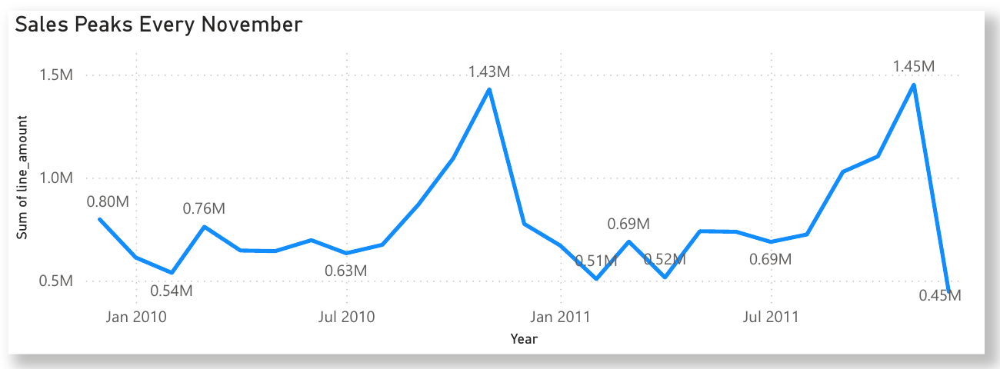
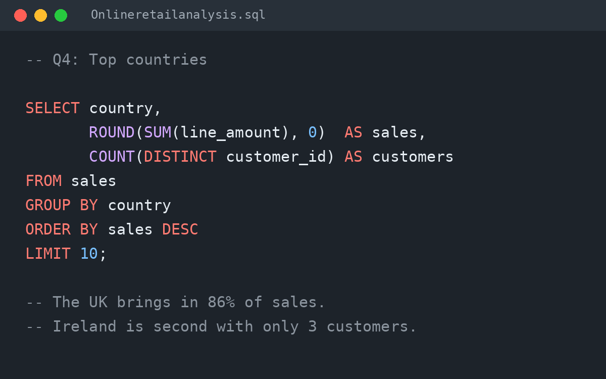

Key Findings
- This “gift shop” is a wholesale business. The average order is £435.53, and orders arrive during office hours and almost never on Saturdays.Implication: the business should be managed around trade accounts, not individual consumers.
- Christmas decides the year. The five best months in the data all fall between September and November.Implication: stock and staffing need to be in place before September.
- A few customers carry the business. Ten customers generate about 14% of all sales.Implication: losing a single key account would have a material impact.
- Some overseas accounts act like distributors. Ireland is the second-largest market with only three customers, and Dutch orders average £2,545, five times the UK average.Implication: a handful of international accounts can be worth more than whole countries.
- Big numbers need checking. The third best-selling product turned out to be a single order of 80,995 paper craft kits, cancelled twelve minutes later.Implication: rankings must exclude cancelled and erroneous orders before they are trusted.
Recommendations
- Look after the top customers. Give the biggest accounts a named contact and early access to new stock.Addresses finding 3 · Measure: revenue retained from the top ten customers.
- Prepare for autumn early. Stock up on best sellers before September, when the busiest months begin.Addresses finding 2 · Measure: stock availability during September to November.
- Grow the overseas accounts. Develop the few large international customers that behave like distributors.Addresses finding 4 · Measure: overseas revenue per account.
- Check unusual orders. Flag any order far larger than a customer’s normal size before it is processed.Addresses finding 5 · Measure: orders flagged and corrected before processing.
View repository
The Dashboard for Stakeholders

The dashboard brings the main answers together on one page. Four cards show total sales, orders, customers and average order value. A line chart shows monthly sales rising every autumn and peaking in November, and bar charts rank the top overseas markets and best-selling products.
Orders by weekday complete the picture: Thursday is the busiest day and Saturday is almost empty, which points to trade customers rather than the public. The mistaken 80,995-unit order is excluded so it cannot distort the product rankings.
View Dashboard
How the Analysis Was Done

The analysis was built in SQLite using DBeaver. The first step creates a clean sales table that keeps only real sales, removing cancelled orders, postage and fee lines and zero-price items, so every question works from the same reliable data.
Eleven questions then use straightforward SQL: SUM and COUNT for sales, orders and customers; GROUP BY and ORDER BY to rank countries, products and customers; HAVING to compare countries with enough orders; and strftime to look at sales by year, month, weekday and hour. Each query carries a comment stating what it found.
View SQL